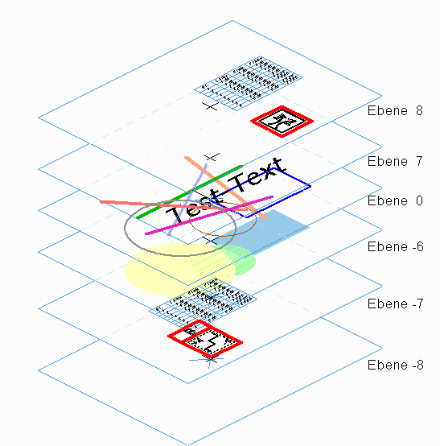
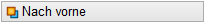
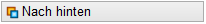
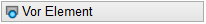
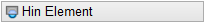
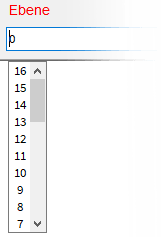
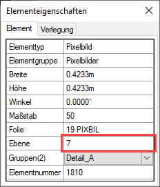
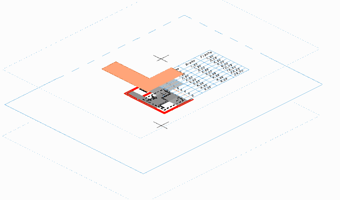
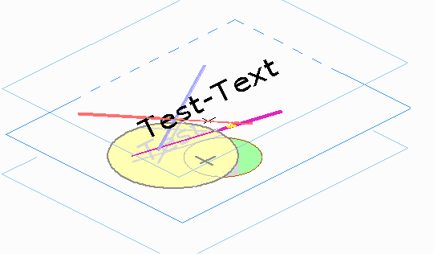
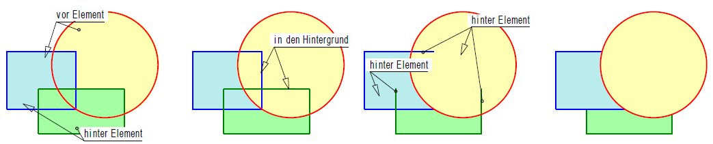

")
In ISBCAD werden bestimmte Elemente bei der Erstellung automatisch in Ebenen sortiert. Sie können sich diese Ebenen als transparente Folien vorstellen, die übereinander angeordnet sind. Durch die transparenten Bereiche einer Ebene können Sie die darunter liegenden Ebenen sehen.
Beim Zeichnen werden die Elemente (Linien, Kreise, Texte) in der Reihenfolge des Erzeugens auf dem Bildschirm angezeigt. Das zuletzt gezeichnete Element liegt oben. Bei sich ganz oder teilweise überdeckenden Elementen, vor allem Füllflächen und Grafiken, kann durch die Veränderung der Ebene die Sichtbarkeit verbessert werden. Insbesondere nach dem Ändern von ineinander geschachtelten Füllflächen kann die relative Lage der Füllungen zueinander geändert werden.
Es gibt 32 Ebenen von -15 bis 16. Die Ebenen 8, 7, 0, -4, -6, -7 und -8 werden von ISBCAD automatisch mit den folgenden Elementen belegt:
Ebenenaufbau |
Ebene |
Inhalt |
|---|---|---|
 |
8 |
Dokumente, wenn beim Einfügen Vordergrund gewählt wurde. |
7 |
Grafiken, wenn beim Einfügen Vordergrund gewählt wurde. |
|
0 |
Alle neu gezeichneten Elemente (Texte, Linien, Kreise). |
|
-4 |
Schraffuren. (Ebene ist im Schraffurdialog einstellbar). |
|
-6 |
Füllungen. (Ebene ist im Schraffurdialog einstellbar). |
|
-7 |
Dokumente, wenn beim Einfügen Hintergrund gewählt wurde. |
|
-8 |
Grafiken, wenn beim Einfügen Hintergrund gewählt wurde. |
·Hilfspunkte sind immer sichtbar, auch wenn sie in die unterste Ebene (-15) verschoben werden.
·Sie können Elemente in den 32 Ebenen beliebig sortieren, um die gewünschte Darstellung auf der Zeichenfläche zu erzielen.
Element(e) in eine andere Ebene verschieben
§Ziehen Sie einen Rahmen durch das Anklicken von zwei Punkten um die Elemente oder klicken Sie einzelne Elemente an. [1.Punkt/Element]; [2.Punkt].
-Mit (Strg + Linksklick) und (Strg + Rahmen aufziehen) können Sie Elemente innerhalb von Gruppen selektieren.
-Solange im Funktionsbereich der Modus Hinzuf aktiviert ist, können Sie der Auswahl weitere Elemente hinzufügen.
-Wählen Sie den Modus Entfer, um einzelne oder mehrere Elemente aus der Auswahl zu entfernen. Bei gedrückter Umschalttaste (Shift) wird automatisch der Entfer-Modus aktiviert - am Cursor wird ein "Minuszeichen" eingeblendet.
§Wählen Sie mit einem Klick auf die linke Maustaste eine der Zielebenen aus und bestätigen Sie mit Rechtsklick.
Zielebene |
Funktion |
|---|---|
|
Ganz nach vorne / oben (Ebene 16). |
|
Ganz nach hinten / unten (Ebene -15). |
 |
Eine Ebene vor. |
 |
Eine Ebene zurück. |
 |
Eine Ebene vor ein zu wählendes Element. [Welches Element]. |
 |
Eine Ebene hinter ein zu wählendes Element. [Welches Element]. |
|
 |
Ebene direkt angeben. Wählen Sie eine der Ebenen aus der Dropdown-Liste aus. [Ebene]. Alternativ: Geben Sie die gewünschte Ebene ein und bestätigen Sie mit der Eingabetaste. Beachten Sie die oberste (16) und unterste Ebene (-15). |


Die markierten Elemente oder Bereiche werden in die ausgewählte Ebene gelegt. Die Aktion ist damit abgeschlossen und Sie können weitere Elemente in eine andere Ebene verlegen.
Wenn die oberste oder unterste Ebene erreicht ist, erscheint ein Hinweis.
Um zu prüfen, in welcher Ebene ein Element liegt
Führen Sie einen der folgenden Schritte aus:
a)Klicken Sie in der unteren Menüleiste auf [?] und klicken Sie anschließend das Element an.
In einem Fenster wird Ihnen neben weiteren Eigenschaften auch die Ebene angezeigt, in der sich das Element befindet.
 |
b)Rufen Sie die Funktion [Konst1 | ? → Anzeig] auf und klicken Sie anschließend das Element an.
Unterhalb der Schaltfläche [Anzeig] wird Ihnen neben weiteren Eigenschaften auch die Ebene angezeigt, in der sich das Element befindet.
Beispiele:
 |
 |
Innerhalb der Ebenen werden die Elemente in der folgenden Reihenfolge gezeichnet: ·Dokumente ·Grafiken ·Füllungen ·sonstige Elemente ·freigestellte Texte Weiterhin gilt die Reihenfolge der Erstellung bei gleichen Elementen. |
|
 |
|
1.Im ersten Schritt wird die gelbe Füllfläche vor die blaue, danach die grüne hinter die blaue Füllung gesetzt. 2.Im zweiten Schritt werden die beiden Linien, die komplett hinter den Füllungen liegen, in den Hintergrund geschoben. 3.Zum Schluss werden die Linien, die teilweise von Füllungen verdeckt werden, hinter die Füllflächen gelegt. |
|